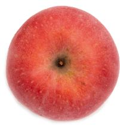
有慢性胃溃疡的人，发病时吃一点刺激性的东西都会痛，此时可以喝“陈皮蜂蜜茶”。它能帮助保护胃黏膜，缓解胃溃疡发作时的疼痛，促进胃溃疡愈合。
【原料】
川陈皮半个、蜂蜜4大勺。
【做法】
【功效】
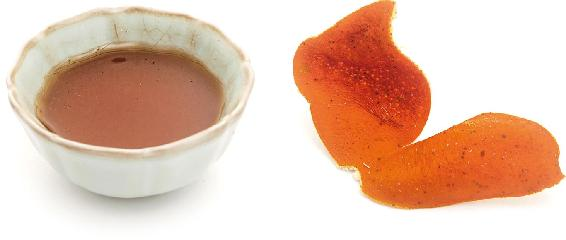
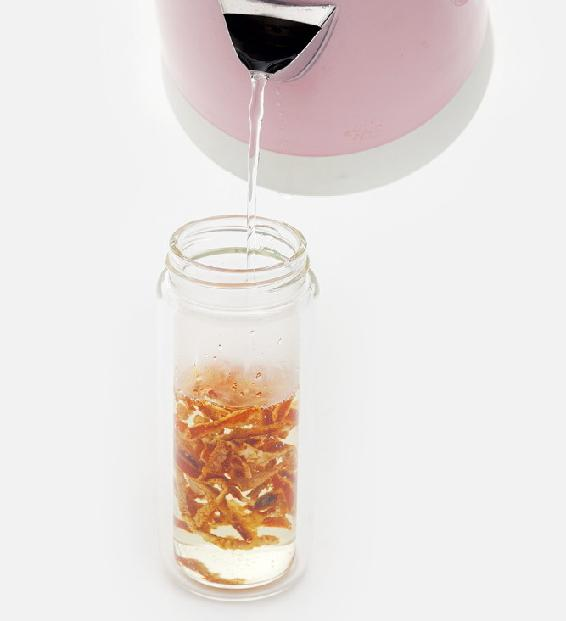
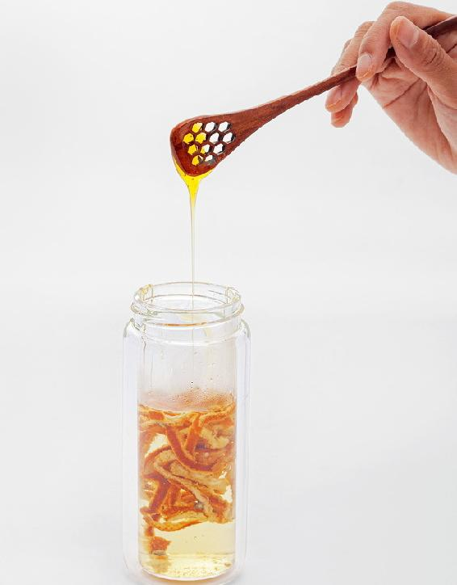
允斌叮嘱
——筱洁
——Mary
——智慧果
——49群读者
——Kerr
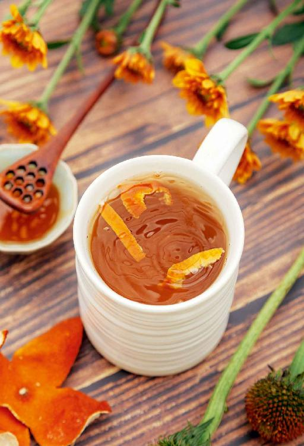
桂皮是煮肉时用的香料，可以温补肾阳，缓解手脚冰凉，还能散寒止痛。
【原料】
桂皮2块、苹果1个。
【做法】
【功效】
健脾养胃，缓解受凉、生气导致的胃疼。
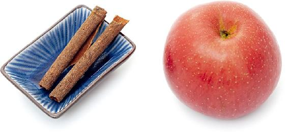
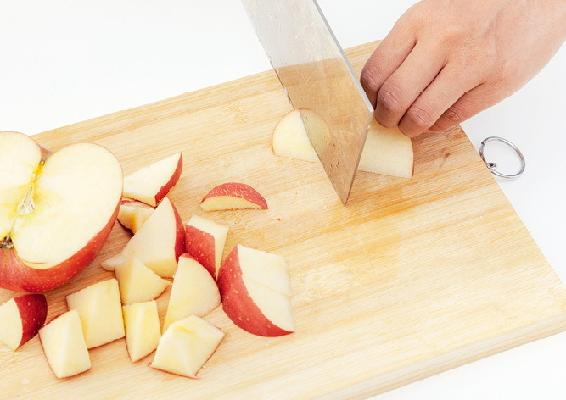
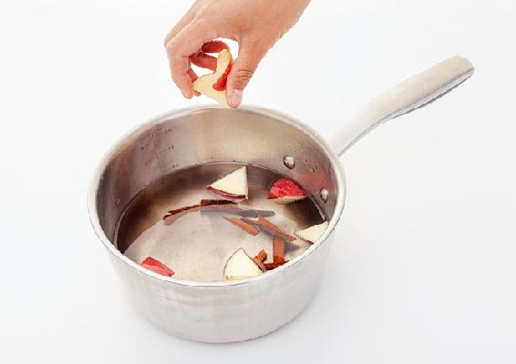
允斌叮嘱
如何区别肉桂与桂皮？
读者评论
第一次是在节目中看到这个方子，记了笔记但是没上心。第二次是在“允斌顺时生活”公众号看见的，发现跟自己挺对症的，然后就煮了。喝了后效果很好，打了几个嗝，像是放气一样，然后胃就不胀气了，很舒服。
——梦夏
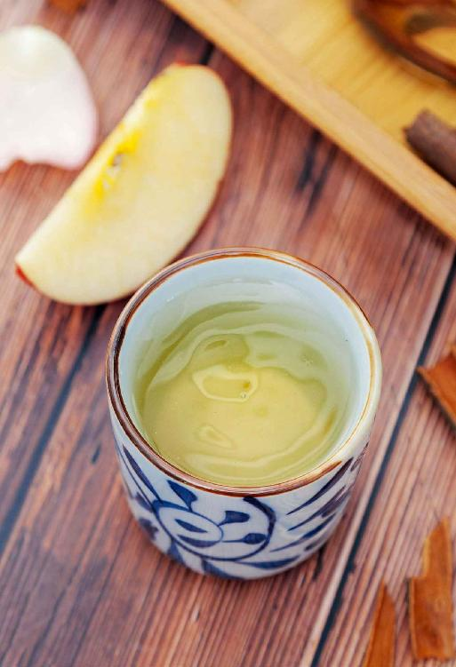
不小心摔跤或是受伤了，在恢复期间，每天喝这道茶，有消除血肿、止痛的作用，还可以防止留下瘀血。
【原料】
干月季花12朵、红糖10〜30克。
【做法】
【功效】
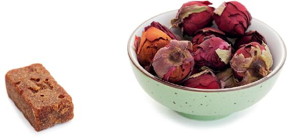
允斌叮嘱
如果加上一小杯黄酒一起喝，效果更好。
读者评论
——馨
——莫莫
——风轻云淡
——25群读者
桂圆壳是祛风解毒的，能祛邪气。单用桂圆壳泡茶，可以调理因受风引起的头晕。
桂圆壳轻，它的作用往上走，专门用来调理头部的问题，尤其是祛除头部的风邪。经常喝点桂圆壳茶，到年老时就能头不晕、耳不聋。
【原料】
桂圆壳500克。
【做法】
【功效】
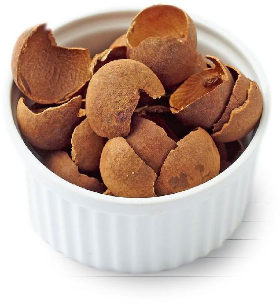
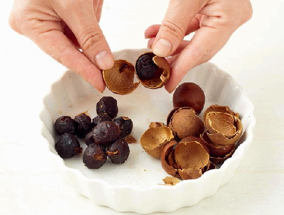
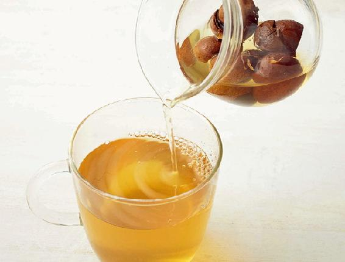
允斌叮嘱
——乐易
——ggsinging
——红
——桃子
——林泉
——宁宁
——维一
——3群读者
——途安
——27群读者
——25群读者
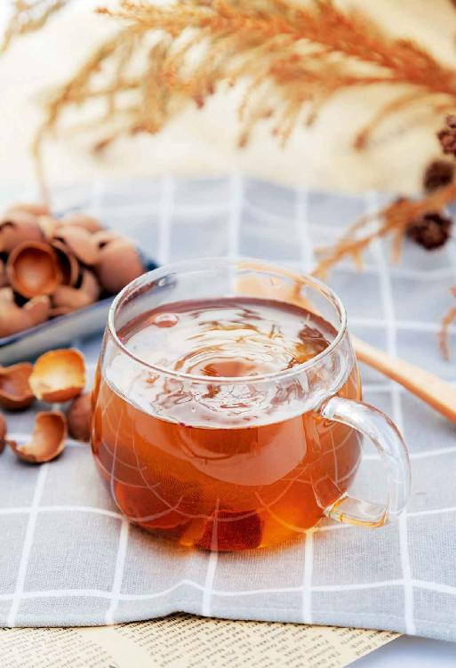